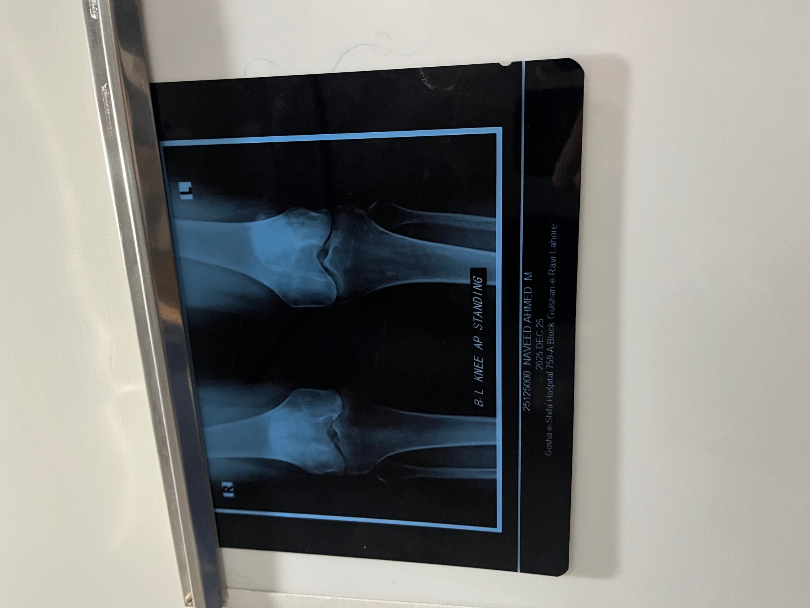
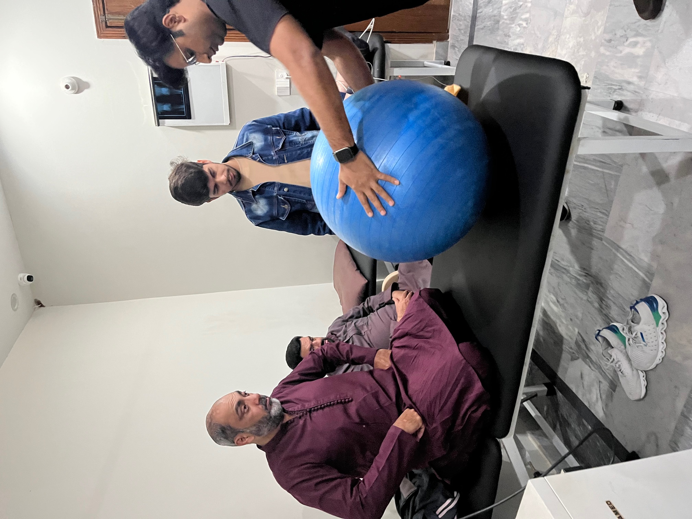
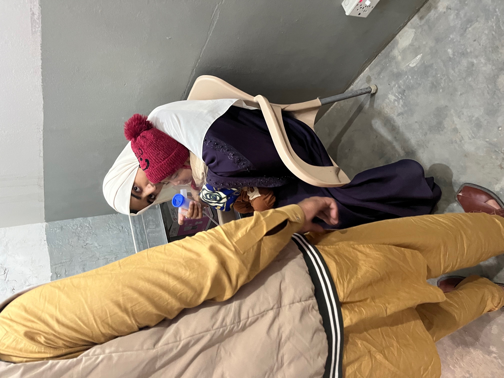
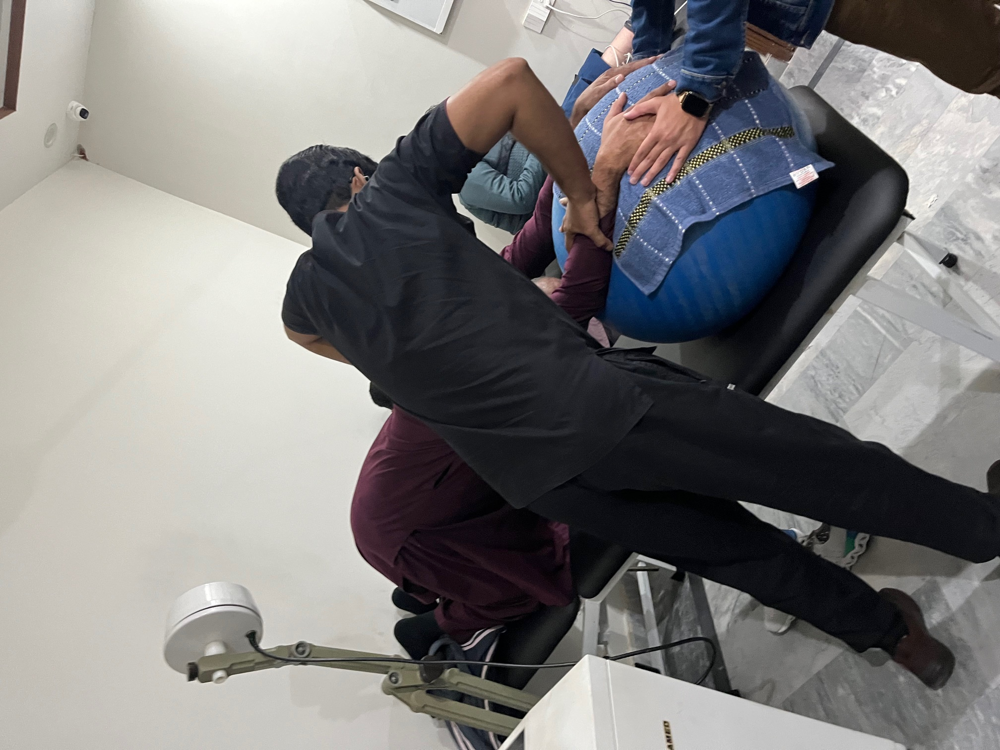
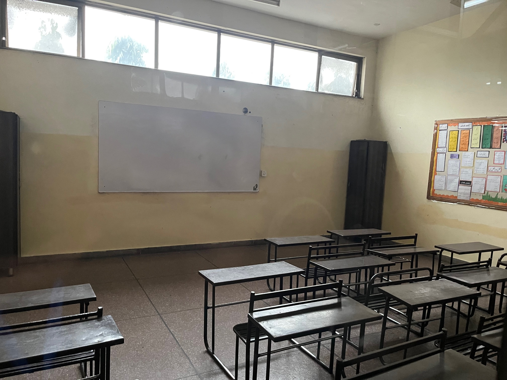

Hope Uplift Foundation Medical Internship (12/25)
This was a project I took during December 2025, in Lahore, Pakistan. During this project I spent time with the doctors and
other employees of the Hope Uplift Foundations, giving feedback, and also observing their work. At the end of each day I had to give a
report of the Hope Uplift Foundations facilities in either Nishaat, or their Autistic Development Center in DHA,
focusing on different aspects every time. This experience introduced me to the medical world, and it was extremely beneficial.
I hope to keep working with the Hope Uplift Foundation!
Photos:

Machine used to show x-ray photos

Physiotherapist explains procedure

Infant is decongested using machine

Physiotherapist stretches patient's back using theraputic ball

Hope Uplift Foundation Classroom